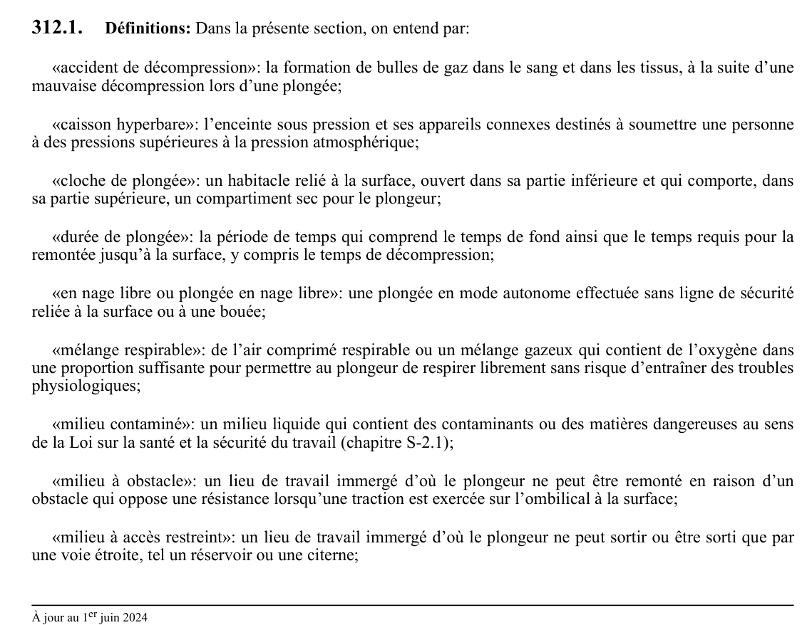

art-312.1-RSST : définitions
Définitions: Dans la présente section, on entend par: «accident de décompression»: la formation de bulles de gaz dans le sang et dans les tissus, à la suite d'une mauvaise décompression lors d'une plongée; «caisson hyperbare»: l'enceinte sous pression et ses appareils connexes destinés à soumettre une personne à des pressions supérieures à la pression...
🌐 LegisQuébec · 📄 PDF officiel
Texte officiel
Définitions: Dans la présente section, on entend par:
«accident de décompression»: la formation de bulles de gaz dans le sang et dans les tissus, à la suite d’une mauvaise décompression lors d’une plongée;
«caisson hyperbare»: l’enceinte sous pression et ses appareils connexes destinés à soumettre une personne à des pressions supérieures à la pression atmosphérique;
«cloche de plongée»: un habitacle relié à la surface, ouvert dans sa partie inférieure et qui comporte, dans sa partie supérieure, un compartiment sec pour le plongeur;
«durée de plongée»: la période de temps qui comprend le temps de fond ainsi que le temps requis pour la remontée jusqu’à la surface, y compris le temps de décompression;
«en nage libre ou plongée en nage libre»: une plongée en mode autonome effectuée sans ligne de sécurité reliée à la surface ou à une bouée;
«mélange respirable»: de l’air comprimé respirable ou un mélange gazeux qui contient de l’oxygène dans une proportion suffisante pour permettre au plongeur de respirer librement sans risque d’entraîner des troubles physiologiques;
«milieu contaminé»: un milieu liquide qui contient des contaminants ou des matières dangereuses au sens de la Loi sur la santé et la sécurité du travail (chapitre S-2.1);
«milieu à obstacle»: un lieu de travail immergé d’où le plongeur ne peut être remonté en raison d’un obstacle qui oppose une résistance lorsqu’une traction est exercée sur l’ombilical à la surface;
«milieu à accès restreint»: un lieu de travail immergé d’où le plongeur ne peut sortir ou être sorti que par une voie étroite, tel un réservoir ou une citerne;
«nacelle de plongeur»: l’équipement utilisé pour amener le plongeur au point d’entrée à l’eau, notamment une cage, une tourelle, une plate-forme ou une cloche de plongée;
«ombilical»: le faisceau de câbles et de tuyaux souples qui relient un plongeur à la surface et qui sert notamment à l’alimenter en mélange respirable et en électricité ainsi qu’à établir la communication;
«plongée à saturation»: toute plongée qui consiste à garder le plongeur pressurisé dans une tourelle de sorte que la pression totale des gaz inertes dans le corps du plongeur reste égale à la pression ambiante à la profondeur où il se trouve et qui permet ainsi de prolonger le temps de fond sans allonger la durée de la décompression;
«plongée en mode autonome»: toute plongée effectuée à l’aide d’un appareil respiratoire de plongée à circuit ouvert, relié uniquement à au moins une bouteille contenant un mélange respirable porté par le plongeur;
«plongée en compagnonnage»: toute plongée effectuée par équipe de 2 plongeurs en nage libre qui assurent mutuellement leur sécurité;
«plongée en mode non autonome»: toute plongée effectuée à l’aide d’un appareil respiratoire de plongée à circuit ouvert, relié à un ombilical alimenté à la surface par un mélange respirable;
«plongée policière»: toute plongée effectuée par des policiers plongeurs, membres d’une unité de plongée dûment constituée au sein d’un corps de police du Québec, lors d’une intervention visant l’ordre et la sécurité publics conformément aux lois en vigueur, notamment le sauvetage, la sécurité des sites, la recherche ou la récupération de personnes ou d’indices reliés à une enquête;
«plongée profonde»: toute plongée effectuée à plus de 40 m de profondeur;
«plongée scientifique»: toute plongée effectuée pour récolter des spécimens ou des données à des fins scientifiques, notamment en archéologie, en biologie, en science de l’environnement, en océanographie, en halieutique ou en microbiologie;
«poste de plongée»: un emplacement, à la surface, d’une dimension suffisante pour recevoir en sécurité l’équipe de plongée et les autres travailleurs, permettre l’installation de l’équipement et du matériel de plongée requis et assurer le bon fonctionnement des opérations, tels une rive, une jetée, un quai flottant ou une embarcation;
«recompression thérapeutique»: le traitement que reçoit un plongeur, habituellement dans un caisson hyperbare, conformément aux tables de traitement et aux méthodes reconnues;
«Service d’assistance médicale pour les urgences en plongée»: le service désigné à cette fin par le ministère de la Santé et des Services sociaux;
«site susceptible de présenter un différentiel de pression»: un site sous l’eau où la présence d’une fissure, d’un renard ou d’une ouverture peut entraîner une différence de pression provoquant une source d’aspiration pour le plongeur;
«tables de plongée ou de décompression»: les tables de durée des paliers à respecter lors de la remontée d’un plongeur selon les caractéristiques de la plongée effectuée, tels la profondeur, le mélange respirable utilisé et le temps de fond, afin de réduire le risque d’accident de décompression;
«tables de traitement»: les protocoles de traitement hyperbare incluant les profils de recompression thérapeutique utilisés lors du traitement d’un plongeur victime d’un accident de décompression;
«temps de fond»: le temps, arrondi à la minute près, compris entre le moment où le plongeur quitte la surface pour descendre sous l’eau jusqu’au moment où il amorce sa remontée;
«tourelle»: un caisson hyperbare submersible équipé d’un sas à pression variable et servant à descendre les plongeurs sous pression ou à les remonter à la pression atmosphérique;
«zone d’influence»: toute portion d’un cours d’eau en amont ou en aval d’un ouvrage hydraulique ou d’une centrale hydroélectrique qui, à la suite d’une variation du débit de l’eau turbinée ou déversée, est sujette à des variations de courants qui constituent un danger pour le plongeur.
Texte de l’article 312.1 RSST, extrait de la couche texte du PDF officiel (page 83), sans OCR ni retouche. La capture ci-dessous et le PDF font foi.
{kind=link}

Toucher l'image pour l'agrandir🔗 Voir art. 312.1 RSST dans le PDF (page 83) · texte à jour au 1er juin 2024
📚 Source légale : D. 425-2010, a. 3 · LégisQuébec
Voir aussi
Pages qui pointent ici (3)
- art-312-RSST : précautions relatives aux matières liquides Recueil législatif
- art-312.2-RSST : champ d'application Recueil législatif
- RSST : Section 26 : Travail dans un espace clos Recueil législatif